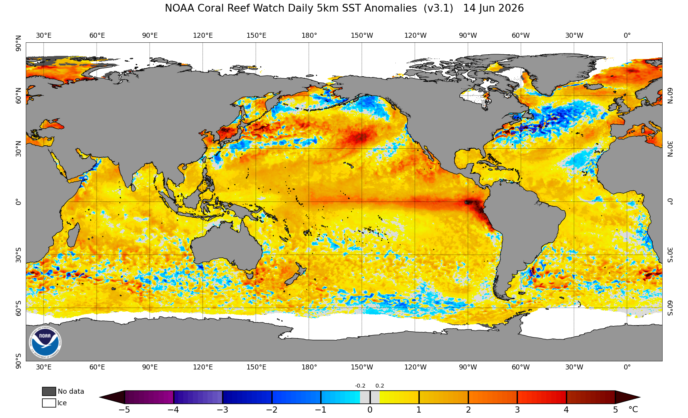

Top End (NT local)
Bureau of Meteorology declares El Niño underway, monsoon onset likely delayed in the north

Bureau of Meteorology declares El Niño underway, monsoon onset likely delayed in the north
The Bureau of Meteorology has declared that El Niño is now underway in the tropical Pacific and is likely to persist into next year, with some forecast models pointing to one of the strongest events on record. For northern Australia, including the Top End, El Niño typically means a delayed monsoon onset, below average spring rainfall and warmer than average days, alongside an increased fire risk further south.